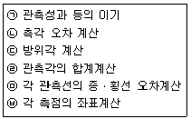
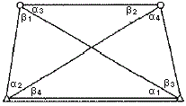
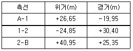
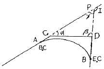
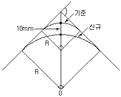
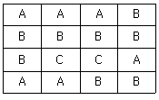

지적기사 (2014-08-17 기출문제)
1과목: 지적측량
1. 지적삼각보조점측량을 다각망도선법에 의할 경우 폐색오차를 구하는 식으로 맞는 것은? (단, n은 폐색변을 포함한 변수임)
- ±10√n초 이내
- ±20√n초 이내
- ±30√n초 이내
- ±40√n초 이내
(정답률: 83%)

2. 지적도근점측량 중 배각법에 의한 도선의 계산 순서를 옳게 나열한 것은?

- ㉠-㉡-㉢-㉣-㉤-㉥
- ㉠-㉡-㉣-㉢-㉥-㉤
- ㉠-㉣-㉡-㉢-㉤-㉥
- ㉠-㉢-㉣-㉡-㉥-㉤
(정답률: 83%)
3. 평판을 세운 점에서 목표물까지의 경사거리가 72m일 때 조준의 엘리데이드(Alidade)의 경사분획이 25이면 평판에서 목표물까지의 수평거리는?
- 50m
- 60m
- 65m
- 70m
(정답률: 58%)
4. 지적기준점을 19점을 설치하여 측량하는 경우 측량기간으로 옳은 것은?
- 4일
- 5일
- 6일
- 7일
(정답률: 81%)
5. 두 점간의 거리가 222m이고 두 점 간의 방위각이 33° 33‘ 33“일 때 횡선차는?
- 122.72m
- 212.55m
- 196.48m
- 185.00m
(정답률: 70%)
6. 다음 중 지번 및 지목의 제도에 대한 설명으로 옳지 않은 것은?
- 지번 및 지목은 경계에 닿지 않도록 필지의 중앙에 제도한다.
- 지번 및 지목을 제도할 때에는 지번 다음에 지목을 제도한다.
- 지번 및 지목을 제도할 때에는 0.5~1mm 크기의 고딕체로 제도한다.
- 지번 및 지목을 제도할 때에는 지번의 글자 간격은 글자크기의 1/4 정도 띄어서 제도한다.
(정답률: 82%)
7. 지적도의 축척이 1/600인 지역에서 토지를 분할하는 경우 면적측정부의 원면적이 4,529m2이고, 보정면적합계가 4,550m2일 때 어느 필지의 보정면적이 2,033m2이었다면 이 필지의 산출면적은 얼마인가?
- 2,019.8m2
- 2,023.6m2
- 2,024.4m2
- 2,028.2m2
(정답률: 66%)
8. 경위의측량방법으로 세부측량을 실시한 경우 측량결과도에 기재할 사랑이 아닌 것은?
- 지상에서 측정한 거리 및 방위각
- 측량대상 토지의 경계점 간 실측거리
- 측량대상 토지의 점유현황선
- 측량기하적 및 지상에서 측정한 거리
(정답률: 63%)
9. 측량성과와 검사성과의 연결교차에 대한 허용범위를 잘못 설명한 것은?
- 지적삼각점 : 0.10 이내
- 지적삼각점보조점 : 0.25m 이내
- 지적도근점(경계점좌표등록부 시행지역) : 0.15m 이내
- 경계점(경계점좌표등록부 시행지역) : 0.10m 이내
(정답률: 90%)
10. 다음 중 최소제곱법에 의한 확률법칙에 의해 처리할 수 있는 오차는?
- 정오차
- 부정오차
- 착각
- 과대오차
(정답률: 89%)
11. 100m+4.96mm의 정수를 표시한 권척을 사용하여 500m를 측정하였을 경우 바른 길이는?
- 500.000m
- 500.⑤0m
- 500.025m
- 500.043m
(정답률: 87%)
12. 지적삼각점의 관측과 계산에 대한 설명으로 맞는 것은?
- 수평각 관측은 3배각의 배각관측법에 의한다.
- 1방향각의 측각 공차는 ±50초 이내이다.
- 기지각과의 측각 공차는 ±40초 이내이다.
- 연직각을 관측할 때에는 정반 1회 관측한다.
(정답률: 92%)
13. 오차의 성질에 대한 설명 중 옳지 않은 것은?
- 숙련된 지적측량기술자도 착오는 일으킨다.
- 우연오차는 확률법칙에 따라 전파된다.
- 정오차는 측정회수를 거듭할수록 누적된다.
- 값이 큰 오차일수록 발생확률도 높다.
(정답률: 90%)
14. 전파기측량방법에 따라 다각망도선법으로 지적삼각보조점측량을 할 때의 기준으로 옳은 것은?
- 1도선의 거리는 4km이하로 한다.
- 3점 이상의 기지점을 포함한 폐합다각방식에 의한다.
- 1도선의 점의 수는 기지점을 제외하고 5점 이하로 한다.
- 1도선은 기지점과 기지점, 교점과 교점 간의 거리이다.
(정답률: 86%)
15. 사각망 조정계산에서 관측각이 다음과 같을 때 α1의 각규약에 의한 조정량은? (단, α1=48.° 31‘ 50.3“, β2=53°03’57.2”, α3=22°44'29.2", β4=27°16'36.9")

- +0.2“
- -0.2“
- +0.4“
- -0.4“
(정답률: 73%)
16. 다음 구소삼각지역의 직각좌표계 원점 중 평면직각종횡선 수치의 단위를 간(間)으로 한 원점은?
- 조본원점
- 고초원점
- 율곡원점
- 망산원점
(정답률: 65%)
17. 다각망도선법에 의한 지적도근점측량을 할 때 1도선의 점의 수는 몇 점 이하로 제한되는가?
- 10점
- 20점
- 30점
- 40점
(정답률: 71%)
18. 세부측량을 실시한 경우 지적소관청이 검사하는 항목이 아닌 것은?
- 면적측정의 정확 여부
- 지적기준점설치망 구성의 적정 여부
- 측량준비도 및 측량결과도 작성의 적정 여부
- 경계점 간 계산거리(도상거리)와 실측거리의 부합 여부
(정답률: 58%)
19. 광파기측량방법으로 지적삼각점을 관측할 경우 기계의 표준편차는 얼마 이상이어야 하는가?
- ±(3mm+5mm) 이상
- ±(5mm+5mm) 이상
- ±(3mm+10ppm) 이상
- ±(5mm+10ppm) 이상
(정답률: 93%)
20. 지적측량의 방법으로 틀린 것은?
- 수준측량방법
- 경위의측량방법
- 사진측량방법
- 위성
(정답률: 69%)
2과목: 응용측량
21. 곡선설치에서 캔트(cant)의 의미는?
- 화폭
- 편경사
- 종곡선
- 매개변수
(정답률: 83%)
22. 직선 터널을 뚫기 위해 트래버스측량을 실시하여 표와 같은 값을 얻었다. 터널 중심선 AB의 방위각은?

- 39°56‘37“
- 50°03‘22“
- 219°57‘49“
- 320°02‘11“
(정답률: 43%)
23. 그림의 AB 간에 곡선을 설치하고자 하였으나 교점(P)에 접근할 수 없어 ∠ACD=140°, ∠CDB=90° 및 CD=200m를 관측하였다. C점에서 출발점(B.C)까지의 거리는? (단, 곡선반지름 R은 300m이다.)

- 643.35m
- 261.68m
- 382.27m
- 288.66m
(정답률: 66%)
24. 항공사진은 촬영에서 재촬영하여야 할 판정기준으로 옳지 않은 것은?
- 구름이 사진에 나타날 때
- 항공기의 고도가 계획촬영 고도의 5% 이상 벗어날 때
- 인접 코스 간의 종복도가 표고의 최고점에서 5% 미만일 때
- 촬영 진행방향의 종복도가 53% 미만인 경우가 전 코스 사진 매수의 1/4이상일 때
(정답률: 48%)
25. 수준측량 시에 중간점(I, P)이 많을 경우에 가장 많이 사용되는 야장 기입법은?
- 승각식
- 고차식
- 중간식
- 기고식
(정답률: 86%)
26. 수준측량에 대한 설명으로 옳지 않은 것은?
- 표고는 2점 사이의 높이차를 의미한다.
- 어느 지점의 높이는 기준면으로부터 연직거리로 표시한다.
- 기포관의 감도는 기포 1눈금에 대한 중심각의 변화를 의미한다.
- 기준면으로부터 정확한 높이를 측정하여 수즌측량의기준이 되는 점으로 정해 놓은 검을 수준원점이라 한다.
(정답률: 68%)
27. 원곡선의 설치에서 편각법에 의하여 중심말뚝을 설치하고자 한다. 곡선반지름이 150m, 시단현의 길이가 15m이면 시단현에 의한 편각은?
- 2°6‘35“
- 2°51‘53“
- 3°44‘35“
- 5°44‘53“
(정답률: 76%)
28. 수준측량에서 전시와 후시의 거리가 같게 하여 소거할 수 있는 주요 오차는?
- 망원경의 시준선이 기포관측에 평행이 아닌 때의 오차
- 시준하는 순간 기포가 중앙에 있지 않아 생기는 오차
- 전시와 후시의 야장기입을 잘못하여 생기는 오차
- 표척이 표준길이가 아닌 경우의 오차
(정답률: 63%)
29. 사진기준점 측량의 조정계산방법이 아닌 것은?
- 번들조정법(광속조정법)
- 독립모델조정법
- 다항식법
- 유한요소법
(정답률: 65%)
30. 터널측량에 대한 설명으로 옳지 않은 것은?
- 터널측량은 터널 내 측량, 터널 외 측량, 터널 내외 연결측량으로 구분된다.
- 터널 내의 측점은 천장에 설치하는 것이 유리하다.
- 터널 내 측량에서는 망원경의 십자선 및 표척에 조명이 필요하다.
- 터널 내에서의 곡선 설치는 중앙종거법을 사용하는 것이 가장 유리하다.
(정답률: 81%)
31. 위성과 수신기 사이의 의사거리를 구하는 데 보정되는 오차로 옳지 않은 것은?
- 전리층 오차
- 위성시계 오차
- 대기오차
- 상대오차
(정답률: 48%)
32. 사진축척이 1:10,000이고 종중복도가 60일 때 촬영 종기선의 길이는? (단, 사진크기는 23cm×23cm이다.)
- 460m
- 690m
- 920m
- 1,150m
(정답률: 80%)
33. 그림과 같이 중심을 0으로 하는 반지름 100m, 교각 60°인 기존의 원곡선에서 교각과 접선을 공통으로 하고 외할의 길이를 10m 증가하여 신규 원곡석을 설치하고자 할 때, 두 원곡선의 길이의 차는?

- 59.50m
- 63.80m
- 67.69m
- 71.10m
(정답률: 47%)
34. 수평각 관측에서 측각오차 중 망원경을 정ㆍ반으로 관측하여 소거할 수 있는 오차가 아닌 것은?
- 시준축 오차
- 수평축 오차
- 연직축 오차
- 편심 오차
(정답률: 86%)
35. 사진의 크기가 23cm×23cm인 카메라로 평탄한 지역을 비행고도 2,000m로 촬영하여 연직사진을 얻었을 경우 촬영면적이 21.16km2이면 이 카메라의 초점거리는?
- 10cm
- 27cm
- 25cm
- 20cm
(정답률: 50%)
36. 축척 1:10,000의 항공사진을 180km/h로 촬영할 경우 허용 흔들림의 범위를 0.02mm로 한다면 최장노출시간으로 옳은 것은?
- 1/50초
- 1/100초
- 1/150초
- 1/250초
(정답률: 60%)
37. 사진측량에서 공간상의 임의의 점과 그에 대응하는 사진상의 점 및 사진 및 사진기의 투영중심이 동일 직선 상에 있어야 한다는 조건은?
- 공선조건
- 공면조건
- 수렴조건
- 수평조건
(정답률: 69%)
38. GPS 시스템의 구성요소에 해당되지 않는 것은?
- 위성에 대한 우주 부분
- 지상 관제도에서의 제어부분
- 경영 활동을 위한 영업 부분
- 측량용 수신기에 대한 사용자 부분
(정답률: 92%)
39. 기설의 기준점만으로 세부측량을 실시하기에 부족할 경우 기설기준점을 기준으로 지형측량에 필요한 새로운 측점을 관측하여 결정된 기준점은?
- 도근점
- 경사변환점
- 등각점
- 이점
(정답률: 84%)
40. 하천, 호수, 항만 등의 수심을 나타내기에 가장 적합한 지형표시방법은?
- 담채법
- 점고법
- 영선법
- 채색법
(정답률: 83%)
3과목: 토지정보체계론
41. 다음 중 지적보서가 아닌 부서에 지적전산프로그램 설치를 승인하여 업무에 활용하도록 하는 사항에 해당하지 않는 것은?
- 일필지기본사랑 조회
- 토지이동연혁 조회
- 소유권변동역혁 조회
- 지적측량수행자 조회
(정답률: 76%)
42. 다음 중 지적행정에 웹(Web) LIS를 도입함으로써 발생하는 효과와 가장 거리가 먼 것은?
- 정보와 자원을 공유할 수 있다.
- 업무별 분산처리를 실현할 수 있다.
- 업무처리에 있어 종복을 피할 수 있다.
- 시간과 거리에 제한을 받으나 신속한 민원처리가 가능하다.
(정답률: 74%)
43. 표면모델링에 대한 설명 중 틀린 것은?
- 수집되는 데이터의 특성과 표현방법에 따라 완전한 표면과 불완전한 표면으로 구분된다.
- 불완전한 표면은 격자의 x, y좌표가 알려져 있고, z좌표 값만 입력하면 된다.
- 선형으로 나타나는 불완전한 표면의 대표적인 것을 등고선 또는 등차선이다.
- 완전한 표면은 관심대상지역이 분할되어 있고 각각의 분할된 구역에 다양한 z값을 가지고 있다.
(정답률: 60%)
44. 스캐너에 의한 반자동 입력방식의 작업과정을 순서대로 나열한 것은?
- 준비-래스터데이터 취득-벡터화 및 도형인식-편집-출력 및 저장
- 준비-벡터화 및 도형인식-편집-래스터데이터 취득-출력 및 저장
- 준비-편집-벡터화 및 도형인식-래스터데이터 취득-출력 및 저장
- 준비-편집-래스터데이터 취득-벡터화 및 도형인식-출력 및 저장
(정답률: 90%)
45. 다음 중 다목적지적의 3대 기본요소에 해당하지 않는 것은?
- 측지기본망
- 필지식별자
- 기본도
- 지적중첩도
(정답률: 80%)
46. 도형정보의 입력방법 중 디지타이징 방식에 비하여 스캐닝 방식이 갖는 특징으로 옳지 않은 것은?
- 손상된 도면의 경우 스캐닝에 의한 인식이 원활하지 못할 수 있다.
- 복잡한 도면을 입력할 경우에 작업시간이 단축된다.
- 레이어별로 나뉘어져 입력되므로 비용이 저렴하다.
- 특정 주제만을 선택하여 입력시킬 수 없다.
(정답률: 60%)
47. 다음 중 대표적인 벡터 자료 파일 형식이 아닌 것은?
- Coverage 파일 포맷
- CAD 파일 포맷
- Shape 파일 포맷
- TIFF 파일 포맷
(정답률: 83%)
48. 지적분야에서 토지정보시스템이 필요한 이유로 가장 옳은 것은?
- 지적삼각점의 관리 부실 개선
- 세계좌표계로의 변환에 대비
- 지적 불부합에 의한 분쟁 해결
- 토지 관련 정보의 효율적 관리 및 이용
(정답률: 82%)
49. 다음 중 지적 관련 속성정보를 데이터베이스에 입력하기에 가장 적합한 장비는?
- 디지타이저
- 스캐너
- 키보드
- 플로터
(정답률: 82%)
50. 다음 중 지형공간정보체계가 아닌 것은?
- 지적행적시스템
- 토지정보시스템
- 도시정보시스템
- 환경정보시스템
(정답률: 69%)
51. 다음 중 데이터베이스 관리 시스템(DBMS)의 기본 기능에 해당하지 않는 것은?
- 정의기능
- 분석기능
- 제어기능
- 조작기능
(정답률: 75%)
52. 토지정보체계에서 차원이 다른 공간객체는?
- 체인
- 링크
- 아크
- 노드
(정답률: 53%)
53. 벡터자료에 대한 설명으로 틀린 것은?
- 그래픽의 정확도가 높다.
- 위치와 속성이 검색, 갱신, 일반화가 가능하다.
- 래스터자료보다 자료구조가 단순하다.
- 현상적 자료구조를 잘 표현할 수 있고 축약되어 있다.
(정답률: 86%)
54. 벡터자료의 저장 모형 중 위상(Topology)모형에 대한 설명으로 옳지 않은 것은?
- 공간 객체 간의 위상정보를 저장하는 데 보편적으로 사용되는 방식이다.
- 좌표데이터만을 사용할 때보다 다양한 공간분석이 가능하다.
- 인접한 폴리곤 간의 공통 경계는 각각의 폴리곤에 대하여 한 번씩 반드시 두 번 기록되어야 한다.
- 다각형의 형상(shape), 인접성(Neighborhood), 계급성(Hierarchy)을 묘사할 수 있는 정보를 제공한다.
(정답률: 87%)
55. 지적정보 중 토지대장과 임야대장의 속성정보를 활용한 최초의 정보화 사업은?
- 토지기록전산화
- 토지종합전상망
- 필지중심토지정보시스템
- 한국토지정보시스템
(정답률: 42%)
56. 다음을 Run Length 코드 방식으로 표현하면 어떻게 되는가?

- 3A6B2C3A2B
- 1A2B2A1B1C2A1B1C3B1A1B
- 1B3A4B1A2C3B2A
- 2B1A1B1A1B1C1B1A1B1C2A2B1A
(정답률: 80%)
57. 토지정보를 비롯한 공간정보를 관리하기 위한 데이터 모델로서 현재 가장 보편적으로 많이 쓰이며, 데이터의 독립성이 높고, 수준의 데이터 조작언어를 사용하는 것은?
- 파일 시스템 모델
- 계층형 시스템 모델
- 관계형 시스템 모델
- 네트워크형 시스템 모델
(정답률: 69%)
58. SDTS(Spatial data Transfer Standard)를 통합 데이터 변환에 있어 최소 단위의 체적으로 표현되는 3차원 객체의 정의는?
- GT-ring
- Voxel
- 2D-Manifold
- Chain
(정답률: 67%)
59. 디지타이징 압력에 의한 도면의 오류를 수정하는 방법으로 틀린 것은?
- 선의 중복:중복된 두 선을 제거함으로써 쉽게 오류를 수정할 수 있다.
- 라벨 오류:잘못된 라벨을 선택하여 수정하거나 제 위치에 옮겨주면 된다.
- Under shoot and Overshoot:두 선이 목표지점을 벗어나거나 못 미치는 오류를 수정하기 위해서는 선분의 길이를 늘려주거나 줄여야 한다.
- Sliver 폴리곤 : 폴리곤이 겹치지 않게 적절하게 위치를 이동시킴으로써 제거될 수 있는 경우도 있고, 폴리곤이 겹치지 않게 적절하게 위치를 이동시킴으로써 제거될 수 있는 경우도 있고, 폴리콘을 형성하고 있는 부정확하게 입력된 선분을 만든 버틱스들을 제거함으로써 수정될 수도 있다.
(정답률: 76%)
60. 다음 중 공간상에 알려진 표고값이나 속성값을 이용하여 표고나 속성값이 알려지지 않은 지점에 대한 값을 추정하는 공간분석 기법은?
- 중첩분석
- 공간보간
- 공간패턴
- 지형분석
(정답률: 76%)
4과목: 지적학
61. 토지조사사업 당시 일필지조사 사항의 업무가 아닌 것은?
- 지주의 조사
- 지목의 조사
- 분쟁지의 조사
- 지번의 조사
(정답률: 66%)
62. 현대지적의 일반적 기능이 아닌 것은?
- 사회적 기능
- 경제적 기능
- 법률적 기능
- 행정적 기능
(정답률: 76%)
63. 다음 중 지적관리법령의 변천 순서로 옳은 것은?
- 토지조사령→조선임야조사령→지세령→조선지세령→지적법
- 토지조사령→조선임야조사령→조선지세령→지세령→지적법
- 토지조사령→지세령→조선임야조사령→조선지세령→지적법
- 토지조사령→조선지세령→조선임야조사령→지세령→지적법
(정답률: 83%)
64. 임야조사사업에 대한 설명 중 틀린 것은?
- 토지조사에서 제외된 임야 등의 토지에 대한 행정처분이다.
- 조사 및 측량기관은 부 또는 면이다.
- 임야조사사업 당시 사정의 대상은 소유권 및 경계이다.
- 사정권자는 지방토지조사위원회의 자문을 받아 당시 토지조사국장이 실시하였다.
(정답률: 74%)
65. “지적도에 등록된 경계와 임야도에 등록된 경계가 서로 다른 때에는 축척 1/1,200인 지적도에 등록된 경계에 따라 축척 1/6,000인 임야도의 경계를 정정하여야 한다.”라는 기준은 어느 원칙에 따른 것인가?
- 경계불가분의 법칙
- 등록선후의 법칙
- 용도경중의 법칙
- 축척종대의 법칙
(정답률: 86%)
66. 지상경계를 경정하기 곤란한 경우에 경계 결정의 방법에 대한 일반적인 원칙(이론)이 아닌 것은?
- 지배설
- 점유설
- 평분설
- 보완설
(정답률: 53%)
67. “지적은 특정한 국가나 지역 내에 있는 재산을 지적측량에 의해서 체계적으로 정리해놓은 공부이다.”라고 지적을 정의한 학자는?
- S.R.Simpson
- J.L.Henssen
- A.Toffler
- J.G.McEntyre
(정답률: 74%)
68. 다음 중 지적의 형식주의에 대한 설명으로 옳은 것은?
- 국가의 통치권이 미치는 모든 영토를 필지 단위로 구획하여, 지적공부에 등록ㆍ공시하여야만 배타적인 소유권이 인정된다.
- 지적공부에 등록된 사항에 일반 국민에게 공개하여 정당하게 이용할 수 있도록 하여야 한다.
- 지적공부에 새로이 등록하거나 변경된 사항은 사실 관계의 부합 여부를 심사하여 등록하여야 한다.
- 지적공부에 등록할 사항은 국가의 공권력에 의하여 국가만이 결정할 수 있다.
(정답률: 69%)
69. 토지조사사업 당시 소유자는 같으나 지목이 상이하여 별필(別筆)로 해야 하는 토지들의 경계선과 소유자를 알 수 없는 토지와의 구획선을 무엇이라 하는가?
- 강계선(疆界線)
- 경계선(境界線)
- 지역선(地域線)
- 지세선(地勢線)
(정답률: 71%)
70. 다음 중 오늘날의 토지대장과 유사한 것이 아닌 것은?
- 도전장(都田帳)
- 문기(文記)
- 양안(量案)
- 타량성책(打量成冊)
(정답률: 60%)
71. 구한국정부 말기에 문란한 토지제도를 바로잡기 위하여 시행한 제도와 관계없는 것은?
- 지계(地契)제도
- 입안(立案)제도
- 가계(家契)제도
- 토지증명제도
(정답률: 61%)
72. 지적의 구성요소 중 외부요소에 해당되지 않는 것은?
- 환경적 요소
- 법률적 요소
- 사회적 요소
- 지리적 요소
(정답률: 44%)
73. 지적의 등록방법 중 토지의 고저에 관계없이 수평면 상의 투영면만을 가상하여 각 필지의 경계를 지적공부에 등록하는 것은?
- 2차원 지적
- 3차원 지적
- 1차원 지적
- 입체지적
(정답률: 80%)
74. 일본의 지적 관련 제도와 거리가 먼 것은?
- 법무성
- 부동산등기법
- 부동산등기부
- 지가공시법
(정답률: 62%)
75. 토지멸실에 의한 등록말소에 속하는 것은?
- 토지합병에 따른 말소
- 등록전환에 따른 말소
- 등록변경에 따른 말소
- 바다로 된 토지의 말소
(정답률: 89%)
76. 우리나라 토지조사사업 당시 사정의 확정에 대한 설명으로 틀린 것은?
- 사정의 효력은 법률적인 결정보다 상위에 있었다.
- 사정은 토지의 소유자 및 경계를 확정하는 행정처분이다.
- 사정의 확정에 의한 토지소유권은 절대적으로 확립된 것이었다.
- 토지조사 이전의 모든 사항은 연계된 것으로 보아야 한다.
(정답률: 58%)
77. 지번설정에서 사행식 방법이 가장 적합한 지역은?
- 택지조성지역
- 경지정리지역
- 도로변의 주택지역
- 지형이 불규칙한 농경지
(정답률: 84%)
78. 양전개정론을 주장한 학자와 그 저서의 연결이 옳은 것은?
- 서유구-목민심서
- 이기-해학유서
- 정약용-경국대전
- 김정호-속대전
(정답률: 85%)
79. 우리나라 토지조사사업의 시행목적과 거리가 먼 것은?
- 토지의 가격조사
- 토지소유권 조사
- 토지의 지질조라
- 토지의 외모조사
(정답률: 68%)
80. “토지의 등록사항을 토지소유자는 물론 이해관계자 및 기타 누구나 이용할 수 있도록 외부에서 인식하고 활용할 수 있도록 한다.”가 설명하고 있는 원칙은?
- 공신(公信)의 원칙
- 공시(公示)의 원칙
- 인도(引渡)의 원칙
- 공증(公證)의 원칙
(정답률: 85%)
5과목: 지적관계법규
81. 공유수면 매립준공에 의하여 신규등록하는 경우 대장에 등록하여야 할 소유권 변동일자는?
- 등기접수일자
- 신규등록신청일자
- 소유자정리결의일자
- 공유수면 매립준공 일자
(정답률: 77%)
82. 지적측량업의 등록을 취소하고자 하는 때에 청문을 실시하는 자는?
- 지적소관청
- 시ㆍ도지사
- 안정행정부장관
- 국모총리
(정답률: 45%)
83. 용도지역 안에서 건페율의 최대한도를 20% 이하로 규정하고 있는 지역에 해당되지 않는 것은?
- 녹지지역
- 보전관리지역
- 계획관리지역
- 자연환경보전지역
(정답률: 66%)
84. 부동산등기법상 토지의 분할, 멸실, 면적의 증감 또는 지목의 변경이 있어 그 등기를 신청하는 경우 등기신청서에 첨부하여야 하는 것은?
- 이해관계인의 승낙서
- 토지대장등본이나 임야대장등본
- 지적도나 임야도
- 멸실 및 임야확인서
(정답률: 61%)
85. 다음 중 지목을 체육용지로 할 수 없는 것은?
- 야구장
- 스키장
- 실내체육관
- 실내수영장
(정답률: 71%)
86. 다음 중 등기할 수 있는 권리가 아닌 것은?
- 저당권
- 권리질권
- 임차권
- 유치권
(정답률: 78%)
87. 다음 벌칙 중 2년 이하의 징역 또는 2천만원 이하의 벌금에 처하는 행위로 틀린 것은?
- 속임수, 위력, 그 밖의 방법으로 입찰의 공정성을 해친 자
- 측량기준점 표지를 이전 또는 파손하거나 그 효용을 해치는 행위를 한 자
- 고의로 측량성과를 다르게 한 자
- 측량업의 등록을 하지 아니하고 측량업을 한 자
(정답률: 74%)
88. 지적공부상 등록사항의 오류로 면적이 감소되거나 경계가 변경될 때 정정하는 방법으로 옳은 것은? (단, 이해관계인이 있는 경우)
- 확정판결서 정본에 의해 처리한다.
- 등기부만 정정한다.
- 지적공부만 정정한다.
- 소관청 임의대로 처리한다.
(정답률: 87%)
89. 다음 중 토지이동 신청ㆍ신고 기간이 잘못 연결되어 있는 것은?
- 등록전환:60일 이내
- 지목변경:60일 이내
- 합병:60일 이내
- 도시개발사업 착수 신고:60일 이내
(정답률: 74%)
90. 측량ㆍ수로조사 및 지적에 관한 법률상 토지의 이동으로 볼 수 없는 것은?
- 토지대장에 등록된 소유권변경
- 지적공부의 등록된 지목변경
- 지적도에 등록된 경계변경
- 경계점좌표등록부에 등록된 좌표변경
(정답률: 62%)
91. 다음 중 지적소관청이 지적공부의 등록사항에 잘못이 있는지를 직권으로 조사ㆍ측량하여 정할 수 있는 경우에 해당하지 않는 것은?
- 토지이동정리 결의서 내용과 다르게 정리된 경우
- 미등기 토지의 소유자를 변경하는 경우
- 지적공부의 등록사항이 잘못 입력된 경우
- 지적도 및 임야도의 등록된 필지가 면적의 증간 없이 경계의 위치만 잘못된 경우
(정답률: 67%)
92. 다음 중 지상경계의 결정기준으로 타당하지 않은 것은?
- 토지가 수면에 접하는 경우 최대만수위가 되는 선
- 공유수면매립지의 토지 중 제방 등을 토지에 편이하여 등록하는 경우 안쪽 어깨 부분
- 구거 등의 토지에 절된 부분이 있는 경우 경사면의 상단부
- 연접되는 토지 간에 고저가 있은 경우 구조물의 하단부
(정답률: 90%)
93. 지적공부의 열람 미 등본교부에 대한 설명으로 틀린 것은?
- 전산파일로 된 경우에는 당해 지적소관청이 아닌 다른 소관청에 신청할 수 있다.
- 지방자치단체의 수입증지 또는 현금으로 지적소관청에 압부하여야 한다.
- 지적기술자격을 취득한 자가 지적공부를 열람하는 경우에는 수수료를 면제한다.
- 도면등록을 발급할 수 있는 크기의 기본단위는 가로 21센티미터, 세로 30센티미터를 말한다.
(정답률: 85%)
94. 다음 중 국토의 계획 및 이용에 관한 법률상 원칙적으로 공동구를 관리하여야 하는 자는?
- 국토교통부장관
- 안정행정부장관
- 특별시장
- 구청장
(정답률: 66%)
95. 사업시행자가 지적소관청에 토지 이동에 대한 신청을 할 수 없는 사업은?
- 도시개발사업
- 주택건설사업
- 산업단지개발사업
- 축척변경사업
(정답률: 75%)
96. 다음 중 지적서고의 연중 평균온도 및 연중 평균습도에 대한 기준으로 옳은 것은?
- 섭씨 20±5도, 60±5퍼센트
- 섭씨 25±5도, 65±5퍼센트
- 섭씨 20±5도, 65±5퍼센트
- 섭씨 25±5도, 60±5퍼센트
(정답률: 75%)
97. 측량ㆍ수로조사 및 지적에 관한 법률에서 규정된 용어의 정의에 관한 설명으로 틀린 것은?
- “경계점”은 경계점좌표등록부에 등록하는 필지를 구획하는 선의 굴곡점을 말한다.
- “면적”은 지적공부에 등록한 필지의 수평면상 넓이이다.
- “신규등록”은 새로이 조성된 토지 및 등록이 누락되어 있는 토지를 지적공부에 등록하는 것이다.
- “축척변경”은 지적도에 등록된 경계점의 정밀도를 높이기 위하여 작은 축척을 큰 축척으로 변경하여 등록되는 것이다.
(정답률: 58%)
98. 다음 중 등기신청서의 기재사항에 해당하지 않는 것은? (단, 대법원규칙으로 정하는 등기의 경우는 고려하지 않는다.)
- 부동산의 소재와 지번
- 부동산의 면적과 경계
- 등기소의 표시
- 신청인의 성명 또는 명칭과 주소
(정답률: 34%)
99. 축척변경시행공고에 관한 사항에 해당되지 않는 것은?
- 축척변경의 시행지역
- 축척변경의 시행에 관한 세부계획
- 축척변경의 시행에 관한 사업시행자
- 축척변경의 시행에 따른 청산방법
(정답률: 52%)
100. 다음 중 지적측량을 정지시킬 수 있는 사유에 해당하는 것은?
- 소유권이전, 매매 등을 위하여 필요한 경우
- 토지이용상 불합리한 지상 경계를 시정하기 위한 경우
- 도시개발사업 등의 사업시행자가 사업지구의 경계를 결정하기 위하여 토지를 분할하려는 경우
- 지적공부의 등록사항 중 경계나 면적 등 측량을 수반하는 토지의 표시가 잘못된 경우
(정답률: 65%)
지적삼각보조점측량에서는 다각망도선법을 사용하여 폐색오차를 구한다. 폐색오차는 다음과 같이 계산된다.
폐색오차 = (n-2) x 180 - 합계각
여기서 n은 폐색변의 개수이고, 합계각은 측정한 모든 내각의 합이다.
다각망도선법에서는 폐색변의 개수가 적을수록 폐색오차가 작아진다. 따라서 폐색변의 개수가 적을 때는 폐색오차가 작아지는 것이 이상적이다.
식을 간단히 변형하면 다음과 같다.
폐색오차 = (n-2) x 180 - (n-2) x 180/n
= (n-2) x 180 x (n-1)/n
= 180 x (n-2) x (n-1)/n
= 180 x (n-1) - 180/n x (n-1)
= 180 x (n-1) x (1 - 1/n)
= 180 x (n-1) x (n-1)/n
= 180 x (n-1)^2/n
따라서, 폐색변의 개수가 n일 때 폐색오차는 대략 ±10√n초 이내가 된다. 이는 폐색변의 개수가 적을수록 폐색오차가 작아지는 것을 보여준다.